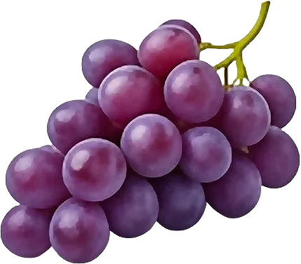

Raisin

Chaque grain est une baie ; le chasselas de Moissac est AOP.
- Saison : août, septembre, octobre
- Pleine saison : septembre
- Famille botanique : Vitacées
Histoire
La vigne est cultivée depuis environ 8 000 ans dans le Caucase. Les Grecs l’introduisent en Gaule vers 600 avant notre ère, à Marseille. Sous François Iᵉʳ, la « Treille du Roy » de Fontainebleau produit un chasselas réputé, servi à la table royale.
Origine et régions de production
Le raisin de table français est cultivé dans le Sud :
- Occitanie (Tarn-et-Garonne)
- Provence (Vaucluse)
Le chasselas de Moissac et le muscat du Ventoux bénéficient tous deux d’une AOP.
Bienfaits
Le raisin est un fruit énergétique de fin d’été :
- Polyphénols : Surtout dans la peau et les pépins, comme le resvératrol.
- Énergie rapide : Riche en sucres naturels, environ 70 kcal/100 g.
- Potassium : Présent en bonne quantité.
- Hydratant : Environ 80 % d’eau.
Variétés
- Chasselas : Blanc doré, AOP de Moissac.
- Muscat de Hambourg : Noir, goût musqué, AOP du Ventoux.
- Italia : Gros grains blancs, parfum muscat.
- Alphonse Lavallée : Noir, gros grains croquants.
- Sans pépins : Petits grains, souvent séchés.
Conserver sans gaspiller
- Conservation : Au frigo, en grappe, sans le laver : 1 semaine.
- Congélation : Égrainé, à plat : jusqu’à 12 mois. Se croque gelé comme un bonbon.
- Rien ne se jette : Le raisin trop mûr fait un jus, une gelée ou se sèche au four.